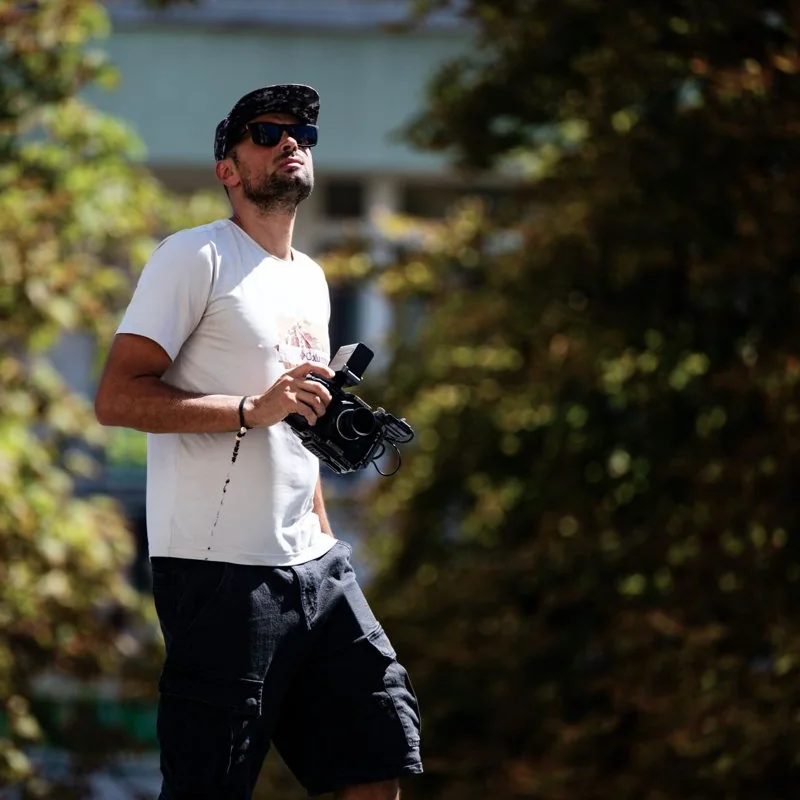
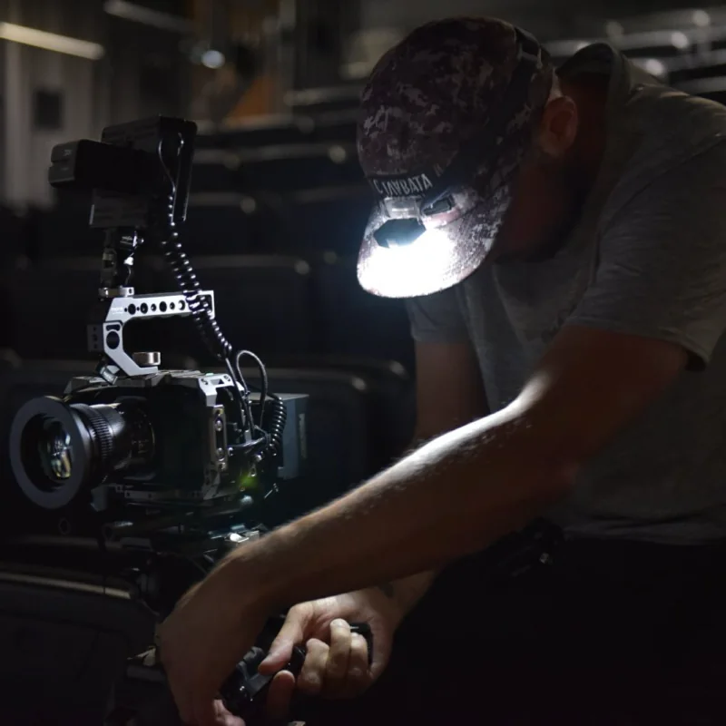
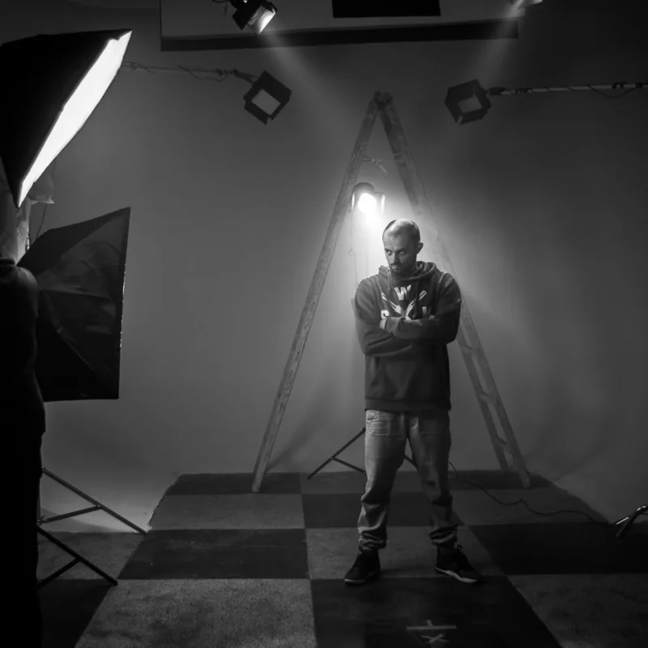
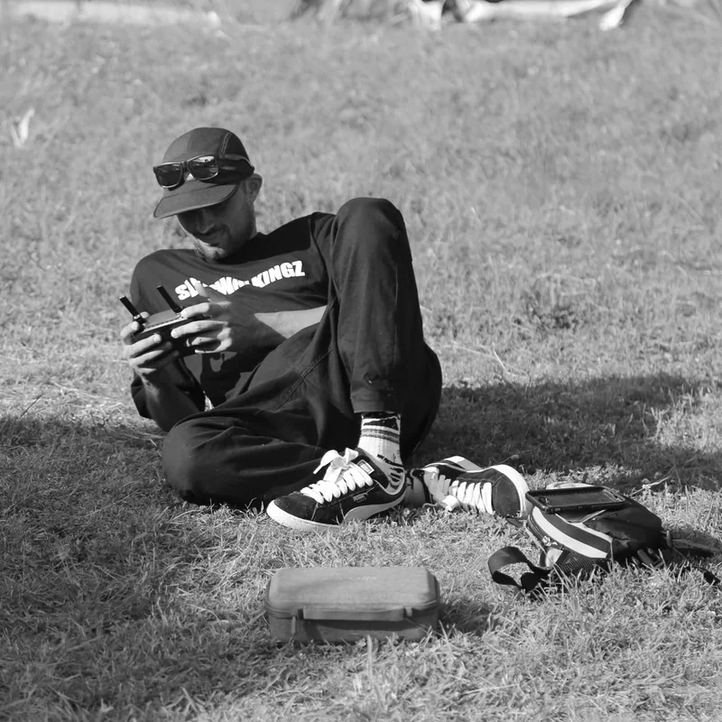
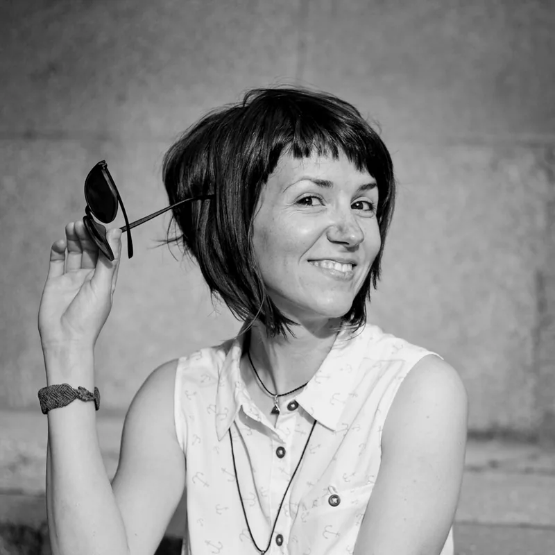

Documentary Films
Authentic stories about people, culture and ideas.
Independent video production.
An independent studio for filmmaking, video production and post-production. Rooted in culture. Open to the world.
Showreel
A short glimpse into documentaries, stages, music, festivals and people.
Approach
A lean process for video work that stays close to the subject.
How we work
Selected Work
Selected films from documentaries, dance and theatre, music videos, festivals and cultural projects.
Services
Films and video production for artists, brands, cultural organisations and production teams.
Authentic stories about people, culture and ideas.
Creative films for brands, businesses and campaigns.
Cinematic films about murals, graffiti and urban art.
Dynamic recaps and aftermovies that capture the live experience.
A dialogue between cinema and the performing arts.
A visual identity for every sound.
Creative editing and remote collaboration worldwide.
About
Founded by filmmaker Kostadin Ekzarov, EKZPERIMENTAL is an independent studio based in Bulgaria, working across documentary filmmaking, commercial production, music and the performing arts.
With a background in directing, choreography, visual arts and advertising, Kostadin brings together filmmaking, editing and visual design. Alongside his film work, he is the founder of EKZPERIMENTAL Creative House and co-founder of JAM ON IT Festival and Flava House.




What it’s like working together

Working with Kostadin Ekzarov and EKZPERIMENTAL is far from an experiment — it is a privilege. From the very beginning, Kostadin brings creativity, professionalism, and an exceptional eye for visual storytelling to every project.
His attention to detail and commitment to excellence are evident in every frame. He has a remarkable ability to transform ideas into compelling visual narratives that not only capture attention but also take the viewer on an emotional journey.
What truly sets EKZPERIMENTAL apart is the dedication to achieving the highest quality while making the entire creative process smooth, collaborative, and enjoyable. He consistently exceeds expectations, delivering stunning results that elevate the final production and leave a lasting impression.
I can wholeheartedly recommend Kostadin Ekzarov and EKZPERIMENTAL to anyone looking for outstanding video production and cinematic storytelling. Having him as part of your team is not just an advantage — it is a genuine privilege.

Kostadin demonstrated a high level of professionalism throughout every stage of our collaboration, from pre-production and filming to the post-production process. He works in an organized and reliable manner, consistently meets deadlines, and maintains clear and timely communication throughout the entire project.
One of his greatest strengths is his ability to recognize the dramatic essence of an event and translate it into a compelling visual narrative. The films and trailers he creates go beyond simple documentation — they communicate a cohesive artistic vision that reflects the identity and objectives of each project.
Kostadin is proactive, contributes thoughtful creative ideas and solutions, and at the same time works seamlessly within project requirements while responding constructively to feedback. He demonstrates exceptional attention to detail, precision in editing, and a strong sense of pacing, rhythm, and emotional impact.
During our collaboration on filming stage performances, as well as creating trailers for Dancing Play and the 2Touch dance programme, Kostadin consistently delivered work of a high professional standard. His commitment to quality and dedication to achieving the best possible result were evident throughout the entire process.
I consider Kostadin to be a reliable, responsible, and highly creative professional. I would confidently recommend Kostadin Ekzarov as a videographer and video artist for projects that require a combination of technical expertise, artistic sensitivity, and a professional approach.
Working with Kostadin Ekzarov (Ekzarka) has been an absolute pleasure. We have collaborated on several projects, and every time he has exceeded my expectations.
Kostadin is far more than a professional videographer and editor — he is a visual storyteller. To me, his videos are genuine works of art. He has an exceptional eye for detail, movement, expressions, and emotion, and he captures the true atmosphere and energy of every event. By skillfully combining different cameras, lenses, and equipment, he creates cinematic visuals that feel both authentic and captivating.
What impresses me even more is his editing. He has a remarkable ability to make completely different shots flow together seamlessly, creating a natural rhythm that keeps the viewer engaged from beginning to end. Every transition feels intentional, and every frame serves the story.
Beyond his creative talent, Kostadin is incredibly professional. He is precise, reliable, and consistently delivers on time — often even ahead of schedule. Communication is always smooth, and you can count on him to approach every project with dedication and attention to detail.
I wholeheartedly recommend Kostadin to anyone looking for outstanding video production. Working with him is inspiring, effortless, and truly rewarding.
Partners
Long-running work across street art, performance, cultural programmes and independent creative projects.
Contact
Let's make it together.
Available for film production, creative collaborations and remote post-production worldwide.
Every project starts
with a conversation.